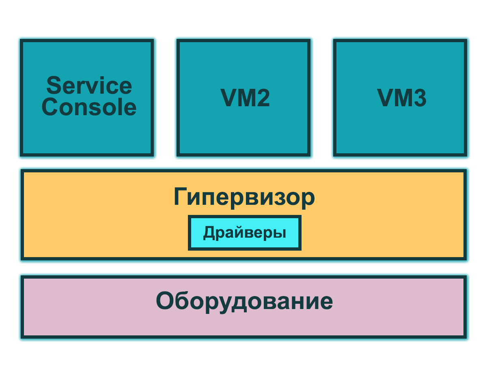

Название лекции
Разработка динамичесих веб приложений
Гладкий Максим Валерьевич / github:MaksHladki
Содержание лекции
Гипервизор
Гипервизор
Гипервизор – это платформа виртуализации, позволяющая запускать на одном физическом компьютере несколько операционных систем. Именно гипервизор предоставляет изолированное окружение для каждой виртуальной машины, и именно он предоставляет гостевым ОС доступ к аппаратному обеспечению компьютера
https://habrahabr.ru/post/98580/
Типы гипервизора
- Гипервизор 1 рода
Гипервизор 1 рода
Определение
Гипервизор 1 типа запускается непосредственно на физическом «железе» и управляет им самостоятельно. Гостевые ОС, запущенные внутри виртуальных машин, располагаются уровнем выше
Схема

Особенности
- Работает непосредственно с оборудованием (позволяет достичь большей производительности, надежности и безопасности)
- Имеет свои встроенные драйверы устройств, модели драйверов и планировщик
- Не зависит от базовой ОС
- Автономный, работает непосредственно в окружении усеченного ядра
Пример
- VMware ESX
- Citrix
- XenServer
Гипервизор 2 типа
Гипервизор второго типа (хостовый, монитор виртуальных машин) — специальный дополнительный программный слой, расположенный поверх основной хостовой ОС, который в основном выполняет функции управления гостевыми ОС, а эмуляцию и управление аппаратурой берет на себя хостовая ОС
Схема

Особенности
- Виртуальные машины при этом запускаются в пользовательском пространстве хостовой ОС
- Более худший уровень производительности
Пример
- MS Virtual Server
- VMware Server
- VirtualBox
- VMware Workstation
- QEMU
- Parallels
Гипервизор гибридный
Определение
Объединенный вариант первых двух, в котором функции управления аппаратными средствами выполняются тонким гипервизором и специальной депривилегированной сервисной ОС, работающей под управлением тонкого гипервизора. Обычно гипервизор управляет напрямую процессором и памятью компьютера, а через сервисную ОС гостевые ОС работают с остальными аппаратными компонентами
Особенности
- состоит из двух частей: из тонкого гипервизора, контролирующего процессор и память, а также работающей под его управлением специальной сервисной ОС в кольце пониженного уровня. Через сервисную ОС гостевые ОС получают доступ к физическому оборудованию.
- эффективен при высокой вычислительной нагрузке, когда используется только “тонкий” гипервизор, который в случае Microsoft занимает всего порядка 100 Кб оперативной памяти.
Пример
- Sun Logical Domains
- Xen
- Citrix XenServer
- Microsoft Hyper-V
Архитектура гипервизоров
Монолитный гипервизор
Гипервизоры монолитной архитектуры включают драйверы аппаратных устройств в свой код (см. рис. 3).
Схема
Преимущества
- Более высокую (теоретически) производительность из-за нахождения драйверов в пространстве гипервизора
- Более высокую надежность, так как сбои в работе управляющей ОС (в терминах VMware – «Service Console») не приведет к сбою всех запущенных виртуальных машин.
Недостатки
- Поддерживается только то оборудование, драйверы на которое имеются в гипервизоре. Из-за этого вендор гипервизора должен тесно сотрудничать с вендорами оборудования, чтобы драйвера для работы всего нового оборудования с гипервизором вовремя писались и добавлялись в код гипервизора. По той же причине при переходе на новую аппаратную платформу может понадобиться переход на другую версию гипервизора, и наоборот – при переходе на новую версию гипервизора может понадобиться смена аппаратной платформы, поскольку старое оборудование уже не поддерживается.
- Потенциально более низкая безопасность – из-за включения в гипервизор стороннего кода в виде драйверов устройств. Поскольку код драйверов выполняется в пространстве гипервизора, существует теоретическая возможность воспользоваться уязвимостью в коде и получить контроль как над хостовой ОС, так и над всеми гостевыми.
Самым распространенным примером монолитной архитектуры является VMware ESX.
Микроядерная архитектура
При микроядерной архитектуре драйверы устройств работают внутри хостовой ОС. Хостовая ОС в этом случае запускается в таком же виртуальном окружении, как и все ВМ, и именуется «родительской партицией». Все остальные окружения, соответственно – «дочерние». Единственная разница между родительской и дочерними партициями состоит в том, что только родительская партиция имеет непосредственный доступ к оборудованию сервера. Выделением памяти же и планировкой процессорного времени занимается сам гипервизор.
Схема

Преимушества
- Не требуются драйвера, «заточенные» под гипервизор. Гипервизор микроядерной архитектуры совместим с любым оборудованием, имеющим драйверы для ОС родительской партиции.
- Поскольку драйверы выполняются внутри родительской партиции – у гипервизора остается больше времени на более важные задачи – управление памятью и работу планировщика.
- Более высокая безопасность. Гипервизор не содержит постороннего кода, соответственно и возможностей для атаки на него становится меньше.
Самым ярким примером микроядерной архитектуры является, собственно, сам Hyper-V.
Распространенные платформы виртуализации
- VMWARE (ESX, Server)
- CITRIX (Xen)
- Sun xVM (Virtual box)
- Microsoft (Hyper-V)
- Parallels (Parallels)
- Virtualiron (Virtualiron)
преимущества использования виртуализации
Сокращение затрат на приобретение и поддержку оборудования
В современных условиях практически в каждой компании всегда найдется один или два сервера имеющие несколько ролей, например, почтовый сервер, файловый сервер, сервер базы данных и т.д. Безусловно, на одной физической машине можно поднимать по несколько программных комплексов (серверов), выполняющих различные задачи. Но очень часто бывают ситуации, когда установка нового ПО требует независимой серверной единицы. В таком случае как раз и придет на выручку виртуальная машина с требуемой ОС. Сюда же можно отнести случаи, когда в сети необходимо иметь несколько независимых друг от друга виртуальных серверов со своим набором служб и своими характеристиками, которые должны существовать как независимые узлы сети. Типичный пример – это услуги VPS-хостинга.
Сокращение серверного парка
Преимущество виртуализации состоит в том, что можно значительно сократить количество физических ЭВМ. В результате меньше времени и денег тратится на поиск, закупку и замену оборудования. Наряду с этим сокращаются площади, выделяемые под содержание серверной базы.
Сокращение штата IT-сотрудников
На обслуживание меньшего количества физических ЭВМ требуется меньше людей. С точки зрения руководства компании, сокращение штата — это сокращение серьезной статьи расходов предприятия.
Простота в обслуживании
Добавить жесткий диск или расширить существующий, увеличить количество оперативной памяти, все это занимает определенное время в случае с физическим сервером. Отключение, отсоединение из стойки, подключение нового оборудования, включение – в случае использования виртуализации все эти действия опускаются, и операция сводится к нескольким щелчкам мыши или командам администратора.
Клонирование и резервирование.
Еще одним плюсом виртуализации является простота клонирования виртуальных машин. Например, компания открывает новый офис. При этом серверная инфраструктура центрального офиса стандартизирована и представляет собой несколько серверов с одинаковыми настройками. Развертывание такой инфраструктуры сводится к простому копированию образов на сервер нового офиса, конфигурировании сетевого оборудования и изменению настроек в прикладном ПО.
Понятие виртуальной машины
http://www.intuit.ru/studies/courses/2324/624/lecture/13590
Сравнение платформ виртуализации
Рынок гипервизоров
- VMWare - 62%
- Microsoft - 27%
- Citrix - 8%
- Другие производители - 3%
Масштабируемость
| Ресурсы | vSphere | XenServer | Hyper-V |
|---|---|---|---|
| Логические ЦП | 320 | 160 | 320 |
| Виртуальные ЦП на хост | 4096 | 4000 | 2048 |
| Виртуальные ЦП на ВМ | 64 | 16 | 64 |
| Физическая ОЗУ | 4ТБ | 1ТБ | 4ТБ |
| Озу на ВМ | 1ТБ | 128ГБ | 1ТБ |
| Максимум ВМ | 15000 | 1000 | 8000 |
Производительность
| Возможности | vSphere | XenServer | Hyper-V |
|---|---|---|---|
| Виртуальный Fibre Channel | Да | Да | Да |
| Количество адаптеров FC | 256 | 150 | 4 |
| Максимальный размер диска | 64 ТБ | 2 ТБ | 64 ТБ |
| Разгузка передачи данных | Да | Нет | Да |
| Динамическая память | Да | Да | Да |
| Качество обслуживания | Да | Нет | Да |
Механизмы отказоустоичивости
| Возможности | vSphere | XenServer | Hyper-V |
|---|---|---|---|
| Встроенный бекап | Да | Да | Да |
| Репликация ВМ | Да | Нет | Да |
| Мониторинг гостевых приложений | Да | Нет | Да |
| Обновление кластерных систем | Да | Да | Да |
| Шифрование дисков | Да | Нет | Да |
Hyper-V
История
https://ru.wikipedia.org/wiki/Microsoft_Hyper-V_Server
- 2003 - Microsoft acquires Connectix
- 2004 - Miscrosoft Visrtual Server 2005
- 2005 - Microsoft Virtual Server 2005 R2
- 2008 - Microsoft Hyper-V Server 2008
- 2009 - Microsoft Hyper-V server 2008 R2
- 2011 - Microsoft Hyper-V server 2008 R2 SP1
- 2012 - Microsoft Hyper-V server 2012
- 2013 - Microsoft Hyper-V server 2012 R2
- 2016 - Microsoft Hyper-V server 2016
Типы виртуальных машин
- BIOS based architecture - Generation 1
- EFI based architecture - Generation 2
Два способа развертывания
- Как отдельная роль внутри ОС Windows
- Как самостоятельная ОС Windows Hyper-V Server
Архитектура Hyper-V
Общий вид
Еще пример

Как видно из рисунка, гипервизор работает на следующем уровне после железа – что характерно для гипервизоров 1 рода. Уровнем выше гипервизора работают родительская и дочерние партиции. Партиции в данном случае – это области изоляции, внутри которых работают операционные системы. Не нужно путать их, к примеру, с разделами на жестком диске. В родительской партиции запускается хостовая ОС (Windows Server 2008 R2) и стек виртуализации. Так же именно из родительской партиции происходит управление внешними устройствами, а так же дочерними партициями. Дочерние же партиции, как легко догадаться – создаются из родительской партиции и предназначены для запуска гостевых ОС. Все партиции связаны с гипервизором через интерфейс гипервызовов, предоставляющий операционным системам специальный API. Если кого-то из разработчиков интересуют подробности API гипервызовов — информация имеется в MSDN.
Понятие раздела
Hyper-V поддерживает разграничение согласно понятию раздел. Раздел — логическая единица разграничения, поддерживаемая гипервизором, в котором работают операционные системы
- Hyper-V поддерживает разграничение согласно понятию раздел
- Каждый экземпляр гипервизора должен иметь один родительский раздел
Алгоритм работы виртуализации
- стек виртуализации запускается на родительском разделе и обладает прямым доступом к аппаратным устройствам
- родительский раздел порождает дочерние разделы, на которых и располагаются гостевые ОС, при помощи API гипервизова
- дочерний раздел также может породить собственные дочерние разделы
Родительский раздел

- Родительский раздел создается системой в первую очередь, как только гипервизор начинает работу
- Родительский раздел используется для создания и управления дочерними разделами системы и включает WMI провайдера, предоставляющего интерфейс для удаленного администрирования.
- Родительский раздел управляет и распределяет аппаратные ресурсы, за исключением процесса физического распределения памяти, который осуществляется гипервизором
- Аппаратные ресурсы родительского раздела являются общими и выделяются для использования дочерними разделами
- Родительский раздел управляет питанием, "plug and play" - операциями и ведет журналы аппаратных сбоев.
Стек виртуализации
Ряд компонент, располагающийся в родительском разделе, называется стеком виртуализации. Стек виртуализации имеет прямой доступ к аппаратному обеспечению хостового компьютера. Стек виртуализации состоит из следующих компонент:
- Служба управления виртуальными машинами (VMMS)
- Рабочие процессы виртуальных машин (VMWP)
- Виртуальные устройства
- Драйвер виртуальной инфраструктуры (VID)
- Библиотека интерфейсов гипервизора
Дочерний раздел (child partition)
Как уже отмечалось, в рамках дочерних разделов функционируют гостевые операционные системы. Гипервизор первого типа поддерживает три основные типа дочерних разделов:
- с операционной системой семейства Windows и установленными компонентами интеграции;
- с операционной системой, отличной от семейства Windows и с установленными компонентами интеграции;
- с операционной системой, не поддерживающей компоненты интеграции.
Состояния ВМ для службы VMMS
- Starting
- Active
- Not Active
- Taking Snapshot
- Applying Snapshot
- Deleting Snapshot
- Merging Disk
Рабочий процесс виртуальной машины (VMWP)
Для управления виртуальной машиной из родительской партиции запускается особый процесс – рабочий процесс виртуальной машины (VMWP). Процесс этот работает на уровне пользователя. Для каждой запущенной виртуальной машины служба VMMS запускает отдельный рабочий процесс. Это позволяет изолировать виртуальные машины друг от друга. Для повышения безопасности, рабочие процессы запускаются под встроенным пользовательским аккаунтом Network Service.
- Создание, конфигурация и запуск виртуальной машины
- Пауза и продолжение работы (Pause/Resume)
- Сохранение и восстановление состояния (Save/Restore State)
- Создание моментальных снимков (снапшотов)
- Кроме того, именно рабочий процесс эмулирует виртуальную материнскую плату (VMB), которая используется для предоставления памяти гостевой ОС, управления прерываниями и виртуальными устройствами.
Виртуальные устройства
Виртуальные устройства (VDevs) – это программные модули, реализующие конфигурацию и управление устройствами для виртуальных машин. VMB включает в себя базовый набор виртуальных устройств, включающий в себя шину PCI и системные устройства, идентичные чипсету Intel 440BX. Есть два типа виртуальных устройств:
- Эмулируемые устройства – эмулируют определенные аппаратные устройства, такие, к примеру, как видеоадаптер VESA. Эмулируемых устройств достаточно много, к примеру: BIOS, DMA, APIC, шины ISA и PCI, контроллеры прерываний, таймеры, управление питанием, контроллеры последовательных портов, системный динамик, контроллер PS/2 клавиатуры и мыши, эмулируемый (Legacy) Ethernet-адаптер (DEC/Intel 21140), FDD, IDE-контроллер и видеоадаптер VESA/VGA. Именно поэтому для загрузки гостевой ОС может использоваться только виртуальный IDE-контроллер, а не SCSI, который является синтетическим устройством.
- Синтетические устройства – не эмулируют реально существующие в природе железки. Примерами служат синтетический видеоадаптер, устройства взаимодействия с человеком (HID), сетевой адаптер, SCSI-контроллер, синтетический контроллер прерывания и контроллер памяти. Синтетические устройства могут использоваться только при условии установки компонент интеграции в гостевой ОС. Синтетические устройства обращаются к аппаратным устройствам сервера посредством провайдеров служб виртуализации, работающих в родительской партиции. Обращение идет через виртуальную шину VMBus, что намного быстрее, чем эмуляция физических устройств.
Драйвер виртуальной инфраструктуры (VID)
Драйвер виртуальной инфраструктуры (vid.sys) работает на уровне ядра и осуществляет управление партициями, виртуальными процессорами и памятью. Так же этот драйвер является промежуточным звеном между гипервизором и компонентами стека виртуализации уровня пользователя.
Библиотека интерфейса гипервизора
Библиотека интерфейса гипервизора (WinHv.sys) – это DLL уровня ядра, которая загружается как в хостовой, так и в гостевых ОС, при условии установки компонент интеграции. Эта библиотека предоставляет интерфейс гипервызовов, использующийся для взаимодействия ОС и гипервизора.
Провайдеры служб виртуализации (VSP)
Провайдеры служб виртуализации работают в родительской партиции и предоставляют гостевым ОС доступ к аппаратным устройствам через клиент служб виртуализации (VSC). Связь между VSP и VSC осуществляется через виртуальную шину VMBus.
Шина виртуальных машин (VMBus)
Назначение VMBus состоит в предоставлении высокоскоростного доступа между родительской и дочерними партициями, в то время как остальные способы доступа значительно медленнее из-за высоких накладных расходах при эмуляции устройств. Если гостевая ОС не поддерживает работу интеграционных компонент – приходится использовать эмуляцию устройств. Это означает, что гипервизору приходится перехватывать вызовы гостевых ОС и перенаправлять их к эмулируемым устройствам, которые, напоминаю, эмулируются рабочим процессом виртуальной машины. Поскольку рабочий процесс запускается в пространстве пользователя, использование эмулируемых устройств приводит к значительному снижению производительности по сравнению с использованием VMBus. Именно поэтому рекомендуется устанавливать компоненты интеграции сразу же после установки гостевой ОС. Как уже было сказано, при использовании VMBus взаимодействие между хостовой и гостевой ОС происходит по клиент-серверной модели. В родительской партиции запущены провайдеры служб виртуализации (VSP), которые являются серверной частью, а в дочерних партициях – клиентская часть – VSC. VSC перенаправляет запросы гостевой ОС через VMBus к VSP в родительской партиции, а сам VSP переадресовывает запрос драйверу устройства. Этот процесс взаимодействия абсолютно прозрачен для гостевой ОС.
Архитектурные особенности
- Виртуализированные разделы не имеют ни доступа к физическому процессору, не могут управлять прерываниями
- Вместо этого у них есть виртуальное представление процессора и гостевой виртуальный адрес, зависящий от конфигурации гипервизора
- Дочерние разделы не имеют непосредственного доступа к аппаратным ресурсам, но зато получают виртуальное представление ресурсов, называемое виртуальными устройствами.
- Любая попытка обращения к виртуальным устройствам перенаправляется через VMBus к устройствам родительского раздела, которые и обработают данный запрос. VMBus — это логический канал, осуществляющий взаимодействие между разделами. Ответ возвращается также через VMBus.
- Родительские разделы запускают провайдер сервиса виртуализации (Virtualization Service Provider или сокр. VSP), который соединяется с VMBus и обрабатывает запросы доступа к устройствам от дочерних разделов. Виртуальные устройства дочернего раздела работают с клиентом сервиса виртуализации (Virtualization Service Client или сокр. VSC), который перенаправляет запрос через VMBus к VSP родительского раздела. Этот процесс прозрачен для гостевой ОС.
- Гипервизор может определять подмножество процессоров для каждого раздела
- ипервизор управляет прерываниями процессора и перенаправляет их в соответствующий раздел, используя логический контроллер искусственных прерываний
- Hyper-V может аппаратно ускорять трансляцию адресов между различными гостевыми виртуальными адресными пространствами при помощи IOMMU (I/O Memory Management Unit — Устройство управления вводом-выводом памяти), которое работает независимо от аппаратного управления памятью, используемого процессором
- Виртуальные устройства также поддерживают технологию Windows Server Virtualization, называемую прогрессивный ввод-вывод (англ. Enlightened I/O), для накопителей, сетевых и графических подсистем в том числе.
Характеристики
- Масштабируемость, производительность и плотность
Ключевые особенности хранилища
- Поддержка Virtual Fiber Channel (доступ к Fiber Channel SAN из ВМ)
- Нативная поддержка 4-КВ (преимущество от более емких и надежных дисков)
- Размер Virtual Hard Disk до 64 ТВ
- Offloaded Data Transfer (ODX) - повышает быстродействие используя SAN
Улучшенное управление ресурсами
- Улучшение Dynamic Memory (более высокий уровень консолидации ВМ)
- Resource Metering (лог истории использования ВМ)
- QUality of Service (QoS) (позволяет обеспечить SLA по производительности ВМ)
- Data Center Bridging (DCB) - объеденяет сетевой трафик для повышения QoS
Повышение уровня безопасности и изоляции
- Private Virtual LAN
- Защита от ARP Spoofing
- DHCP Guard Protection
- Virtual Port ACLs
- Trunk Mode to Virtual Machine
- Monitoring and Port Mirroroing
- Windows PowerShell / WMI Managment
- IPSec
- SR-IOV
- Dynamic Virtual Machine Queue
- Extensible Switch - открытая платформа для созданий расширений с использованием Windows API
Физическая безопасность
Bitloker encryption
- Шифрование локальных жестких дисков
- Шифрование кластерных дисков
- Шифрование Cluster Shared Volumes
- Изменение Volume level encryption
Уровни миграции ВМ
- Live Migration - бысрая миграция ВМ без ограничений
- Live Storage Migration - миграция дисков
- Shared-Nothing Live Migration - перенос ВМ между узлами и кластерами
Пример создания ВМ
Установка Hyper-V

Hyper-V Manager
Hyper-V Manager

Создание новой ВМ

Название и путь

Выбор типа

Размер ОП
Настройка сети

Virtual Hard Disk
Дополнительные опции

Создание сетевого подключения
Настройка параметров подключения

Настройки ВМ: hardware

Настройки ВМ: firmware

Настройки ВМ: security

Настройки ВМ: memory

Настройки ВМ: processor

Настройки ВМ: SCSI

Настройки ВМ: network

Запуск ВМ

Установка ОС

Результат установки